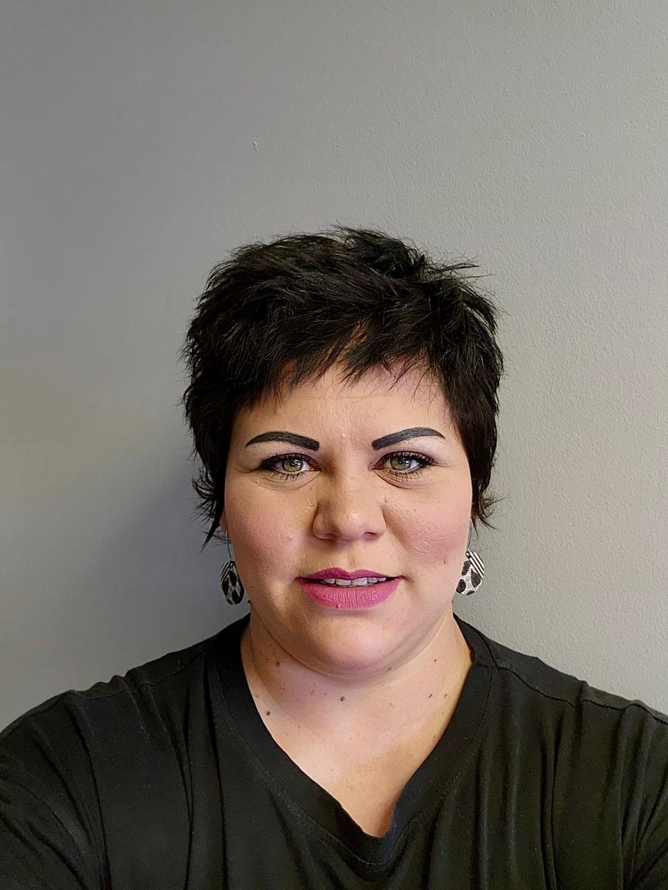

For more than eight decades, Trichard Optometrists has provided trusted, professional eye care with advanced technology, personalised service and premium eyewear solutions.
Book an AppointmentAt Trichard Optometrists, we believe that every patient deserves personalised care and attention. With years of experience and a passion for eye health, Charl Trichard takes the time to understand each patient's individual needs and provides thorough, professional eye examinations.
Charl is committed to delivering exceptional patient care through detailed assessments, personalised consultations and carefully selected solutions to ensure every patient receives the best possible vision care.
At Trichard Optometrists, your eyes are treated with expertise, care and dedication.
Our dedicated team combines experience, professionalism and a passion for eye care to ensure every patient receives personalised service and support.
Owner & Optometrist
Charl Trichard continues the legacy of Trichard Optometrists by providing professional eye care with years of experience and a commitment to every patient's vision and eye health.

Practice Manager
Ramona manages the daily operations of the practice and helps ensure every patient receives a welcoming, efficient and professional experience.
Debtors and Creditors Clerk & Administration
Nedine assists with administration, financial processes and supporting the smooth running of the practice.
Complete assessments of your vision and eye health using modern diagnostic technology.
Soft, RGP, scleral, coloured and cosmetic contact lenses with expert fitting and aftercare.
Frames for everyday wear, sport, specialist activities and every personal style.
Single vision, bifocal and progressive lenses with premium coatings and protection.
Helping children achieve their best vision for learning and everyday life.
Professional management of eye conditions and referrals to trusted specialists when required.
Select a concern below to learn more about common eye problems and how we can assist you.
Dry eyes can cause burning, irritation, redness or a gritty feeling. Our team can help identify the cause and recommend suitable solutions.
Book AppointmentFrequent headaches can sometimes be linked to eye strain, vision changes or focusing problems.
Book AppointmentBlurred vision can be caused by changes in your prescription or other eye health concerns that should be checked.
Book AppointmentTired, sore or uncomfortable eyes can often be linked to screen use, focusing difficulties or visual stress.
Book AppointmentRedness, swelling, irritation, discharge or discomfort may be signs of an eye or eyelid infection that requires attention.
Book AppointmentDifficulty seeing at night, glare from lights or trouble driving after dark can be signs that your vision needs to be assessed.
Book AppointmentWe work with a wide range of medical aid providers. Contact us if you would like to confirm your benefits.
Subscribe for eye care tips, practice news and special offers.
We look forward to welcoming you to Trichard Optometrists.
Address:
4 Milner Road
Waverley
Bloemfontein
Opening Hours:
Monday - Friday
Closed weekends